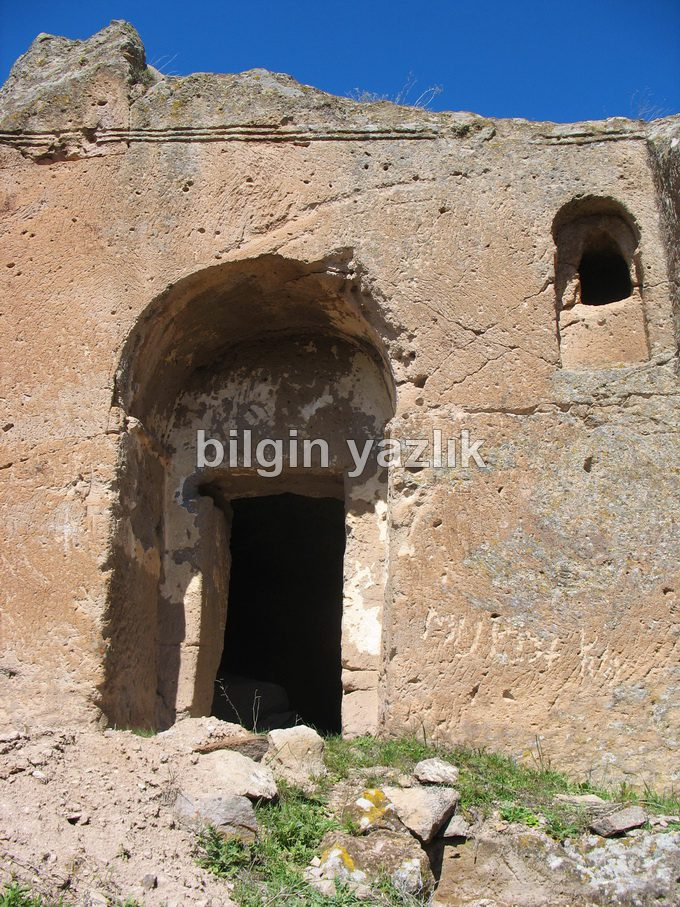
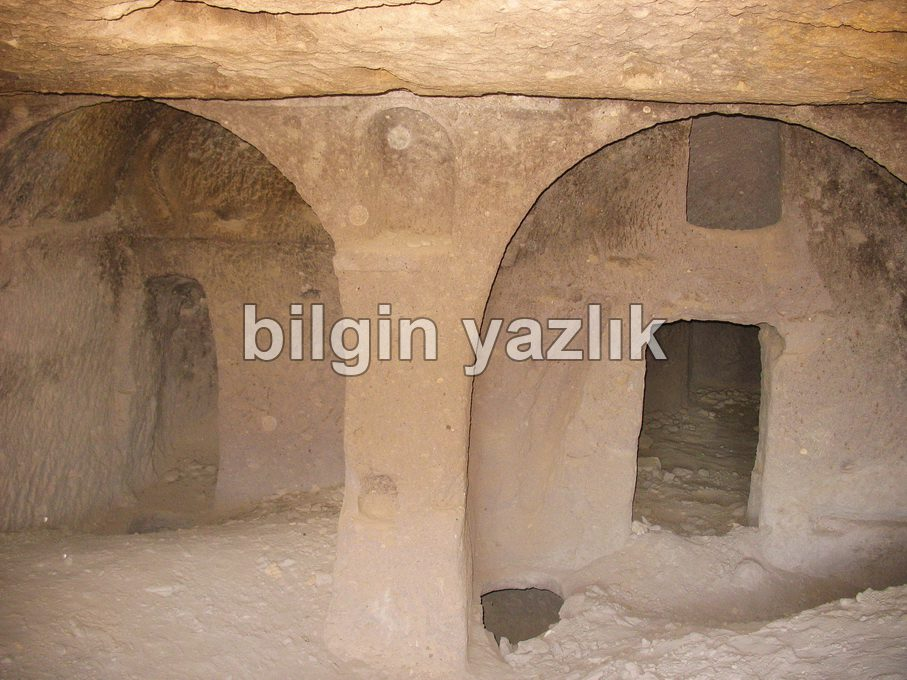
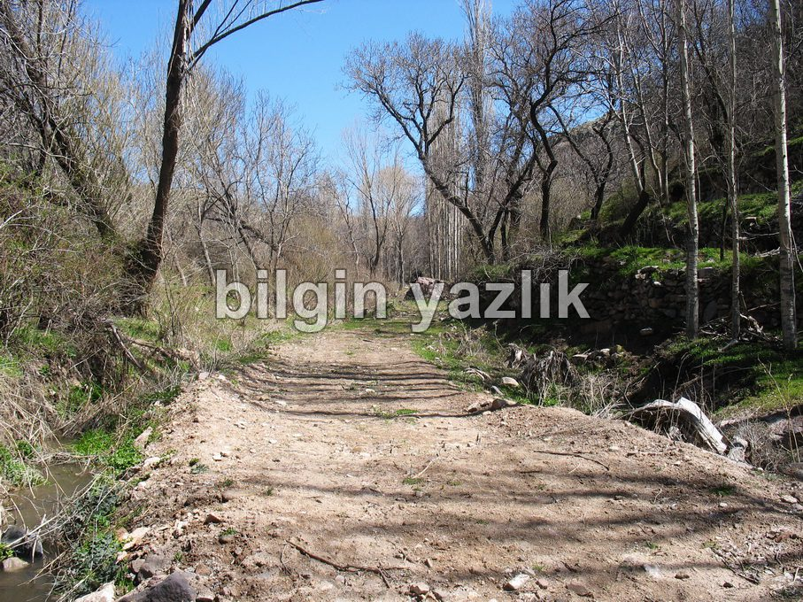
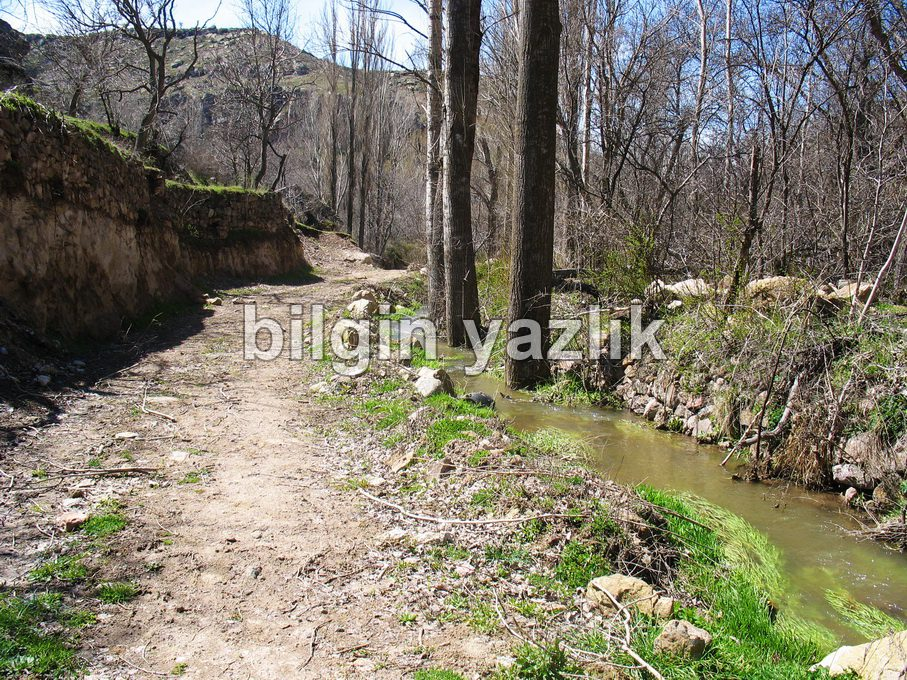
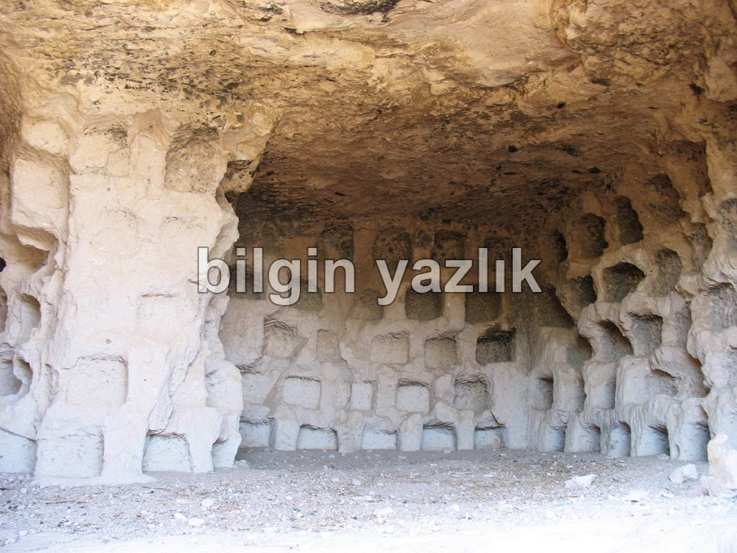
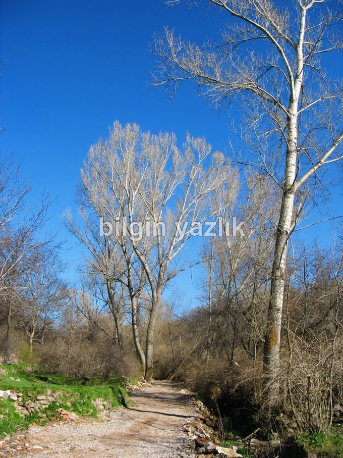
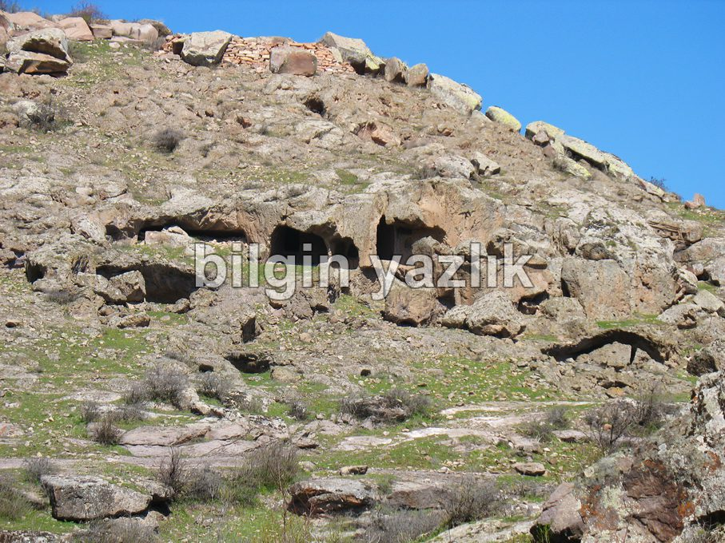
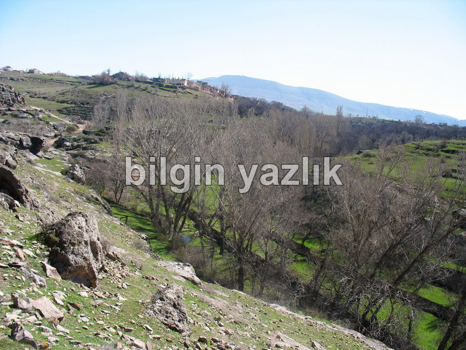

Koramaz Vadisi
Kayseri’nin Subaşı, Küçük Bürüngüz, Ağırnas, Turan, Vekse, Bağpınar mahalleleri sınırları içerisinde yer alan vadi, antik medeniyetlerin izlerini taşımaktadır. Subaşı’ndan başlayıp Kayseri – Sivas karayoluna kadar uzanan vadinin içerisinden bir dere akmaktadır. Dere, vadinin çeşitli noktalarından doğan tatlı su ve çevreden gelen toplama sularla beslenmektedir.
Vadi içerisinde irili ufaklı çok sayıda mağara, kuşluk, columbarium, kilise, yer altı savunma yapısı yer almaktadır. Bu mağaraların bir kısmında hala freskolar yer almaktadır. Zamanında şapel olarak kullanılan bu mağaraların kapıları genelde güneye bakacak şekilde konumlandırılmış ve içlerinde doğuya bakan apsisler bulunmaktadır. Vadide tür olarak söğüt, ceviz, meyve ağırlıklı bir ağaç nüfusu söz konusudur. Köylülerin ekip biçtikleri sebze ve meyve bahçeleri yine vadi içerisinde yer almaktadır.
Koramaz vadisi doğu batı doğrultusunda uzamaktadır ve doğu uç noktasında “Koramaz Dağı” yer almaktadır. Koramaz Dağı, Kayseri ilinin analog televizyon vericilerini taşımaktadır.
Neslihan Parkında yer alan Ağırnas yer altı şehri, yine bu vadinin içerisinde yer almaktadır ve vadideki başka yer altı şehirlerinin habercisi konumundadır.
Doğa yürüyüşü yapmak isteyen sporcuların uğrak adresi olan vadi, mutlaka görülmesi gereken bir tabiat hazinesidir.








Bu yazı taliyol arşivinden taşınmıştır. · özgün kayıt